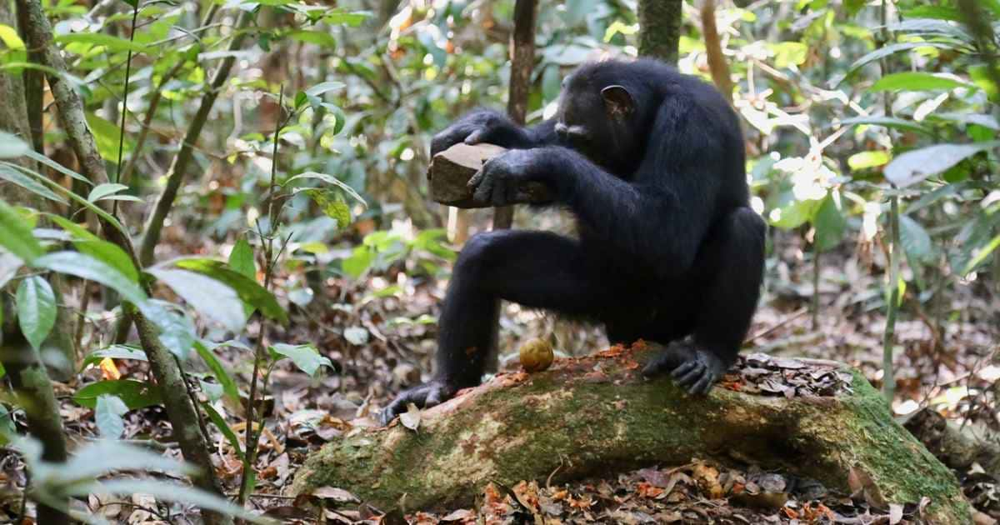

Bonobo of dwergchimpansee (Pan paniscus)
Welke soorten chimpansees bestaan er
Chimpansees (Pan) behoren tot de familie der mensachtigen (Hominidae), net als orang-oetans, gorilla's en de mens.
Op de hele wereld leven ruim 180 soorten apen. Gorilla's, chimpansees, orang-oetans, bonobo's en gibbons lijken het meest op mensen. Daarom worden deze soorten mensapen genoemd.
Er bestaan twee soorten chimpansees met ondersoorten:
Oostelijke chimpansee (Pan t. schweinfurhii)
Centraal-Afrikaanse chimpansee (Pan t. troglodytes)

Chimpansee van Nigeria-Kameroen (Pan t. vellerosus)
West-Afrikaanse chimpansee (Pan t. verus)